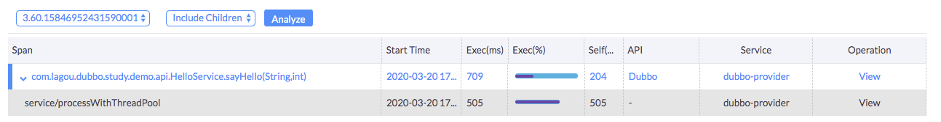

Apache SkyWalking: Use Profiling to Fix the Blind Spot of Distributed Tracing
This post originally appears on The New Stack
This post introduces a way to automatically profile code in production with Apache SkyWalking. We believe the profile method helps reduce maintenance and overhead while increasing the precision in root cause analysis.
Limitations of the Distributed Tracing
In the early days, metrics and logging systems were the key solutions in monitoring platforms. With the adoption of microservice and distributed system-based architecture, distributed tracing has become more important. Distributed tracing provides relevant service context, such as system topology map and RPC parent-child relationships.
Some claim that distributed tracing is the best way to discover the cause of performance issues in a distributed system. It’s good at finding issues at the RPC abstraction, or in the scope of components instrumented with spans. However, it isn’t that perfect.
Have you been surprised to find a span duration longer than expected, but no insight into why? What should you do next? Some may think that the next step is to add more instrumentation, more spans into the trace, thinking that you would eventually find the root cause, with more data points. We’ll argue this is not a good option within a production environment. Here’s why:
- There is a risk of application overhead and system overload. Ad-hoc spans measure the performance of specific scopes or methods, but picking the right place can be difficult. To identify the precise cause, you can “instrument” (add spans to) many suspicious places. The additional instrumentation costs more CPU and memory in the production environment. Next, ad-hoc instrumentation that didn’t help is often forgotten, not deleted. This creates a valueless overhead load. In the worst case, excess instrumentation can cause performance problems in the production app or overload the tracing system.
- The process of ad-hoc (manual) instrumentation usually implies at least a restart. Trace instrumentation libraries, like Zipkin Brave, are integrated into many framework libraries. To instrument a method’s performance typically implies changing code, even if only an annotation. This implies a re-deploy. Even if you have the way to do auto instrumentation, like Apache SkyWalking, you still need to change the configuration and reboot the app. Otherwise, you take the risk of GC caused by hot dynamic instrumentation.
- Injecting instrumentation into an uninstrumented third party library is hard and complex. It takes more time and many won’t know how to do this.
- Usually, we don’t have code line numbers in the distributed tracing. Particularly when lambdas are in use, it can be difficult to identify the line of code associated with a span. Regardless of the above choices, to dive deeper requires collaboration with your Ops or SRE team, and a shared deep level of knowledge in distributed tracing.
Regardless of the above choices, to dive deeper requires collaboration with your Ops or SRE team, and a shared deep level of knowledge in distributed tracing.
Profiling in Production
Introduction
To reuse distributed tracing to achieve method scope precision requires an understanding of the above limitations and a different approach. We called it PROFILE.
Most high-level languages build and run on a thread concept. The profile approach takes continuous thread dumps. We merge the thread dumps to estimate the execution time of every method shown in the thread dumps. The key for distributed tracing is the tracing context, identifiers active (or current) for the profiled method. Using this trace context, we can weave data harvested from profiling into existing traces. This allows the system to automate otherwise ad-hoc instrumentation. Let’s dig deeper into how profiling works:
We consider a method invocation with the same stack depth and signature (method, line number etc), the same operation. We derive span timestamps from the thread dumps the same operation is in. Let’s put this visually:

Above, represents 10 successive thread dumps. If this method is in dumps 4-8, we assume it started before dump 4 and finished after dump 8. We can’t tell exactly when the method started and stopped. but the timestamps of thread dumps are close enough.
To reduce overhead caused by thread dumps, we only profile methods enclosed by a specific entry point, such as a URI or MVC Controller method. We identify these entry points through the trace context and the APM system.
The profile does thread dump analysis and gives us:
- The root cause, precise to the line number in the code.
- Reduced maintenance as ad-hoc instrumentation is obviated.
- Reduced overload risk caused by ad-hoc instrumentation.
- Dynamic activation: only when necessary and with a very clear profile target.
Implementing Precise Profiling with Apache SkyWalking 7
Distributed profiling is built-into Apache SkyWalking application performance monitoring (APM). Let’s demonstrate how the profiling approach locates the root cause of the performance issue.
final CountDownLatchcountDownLatch= new CountDownLatch(2);
threadPool.submit(new Task1(countDownLatch));
threadPool.submit(new Task2(countDownLatch));
try {
countDownLatch.await(500, TimeUnit.MILLISECONDS);
} catch (InterruptedExceptione) {
}
Task1 and Task2 have a race condition and unstable execution time: they will impact the performance of each other and anything calling them. While this code looks suspicious, it is representative of real life. People in the OPS/SRE team are not usually aware of all code changes and who did them. They only know something in the new code is causing a problem.
To make matters interesting, the above code is not always slow: it only happens when the condition is locked. In SkyWalking APM, we have metrics of endpoint p99/p95 latency, so, we are easy to find out the p99 of this endpoint is far from the avg response time. However, this is not the same as understanding the cause of the latency. To locate the root cause, add a profile condition to this endpoint: duration greater than 500ms. This means faster executions will not add profiling load.

This is a typical profiled trace segment (part of the whole distributed trace) shown on the SkyWalking UI. We now notice the “service/processWithThreadPool” span is slow as we expected, but why? This method is the one we added the faulty code to. As the UI shows that method, we know the profiler is working. Now, let’s see what the profile analysis result say.

This is the profile analysis stack view. We see the stack element names, duration (include/exclude the children) and slowest methods have been highlighted. It shows clearly, “sun.misc.Unsafe.park” costs the most time. If we look for the caller, it is the code we added: CountDownLatch.await.
The Limitations of the Profile Method
No diagnostic tool can fit all cases, not even the profile method.
The first consideration is mistaking a repeatedly called method for a slow method. Thread dumps are periodic. If there is a loop of calling one method, the profile analysis result would say the target method is slow because it is captured every time in the dump process. There could be another reason. A method called many times can also end up captured in each thread dump. Even so, the profile did what it is designed for. It still helps the OPS/SRE team to locate the code having the issue.
The second consideration is overhead, the impact of repeated thread dumps is real and can’t be ignored. In SkyWalking, we set the profile dump period to at least 10ms. This means we can’t locate method performance issues if they complete in less than 10ms. SkyWalking has a threshold to control the maximum parallel degree as well.
Understanding the above keeps distributed tracing and APM systems useful for your OPS/SRE team.
How to Try This
Everything we discussed, including the Apache SkyWalking Java Agent, profile analysis code, and UI, could be found in our GitHub repository. We hope you enjoyed this new profile method, and love Apache SkyWalking. If so, give us a star on GitHub to encourage us.
SkyWalking 7 has just been released. You can contact the project team through the following channels:
- Follow SkyWalking twitter.
- Subscribe mailing list: dev@skywalking.apache.org. Send to dev-subscribe@kywalking.apache.org to subscribe to the mail list.
Co-author Sheng Wu is a Tetrate founding engineer and the founder and VP of Apache SkyWalking. He is solving the problem of observability for large-scale service meshes in hybrid and multi-cloud environments.
Adrian Cole works in the Spring Cloud team at VMware, mostly on Zipkin
Han Liu is a tech expert at Lagou. He is an Apache SkyWalking committer